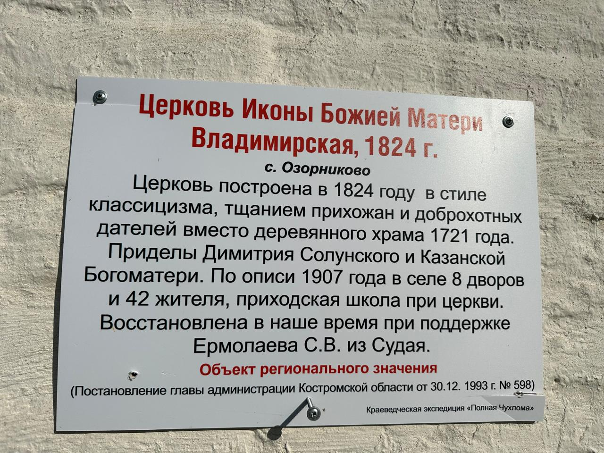
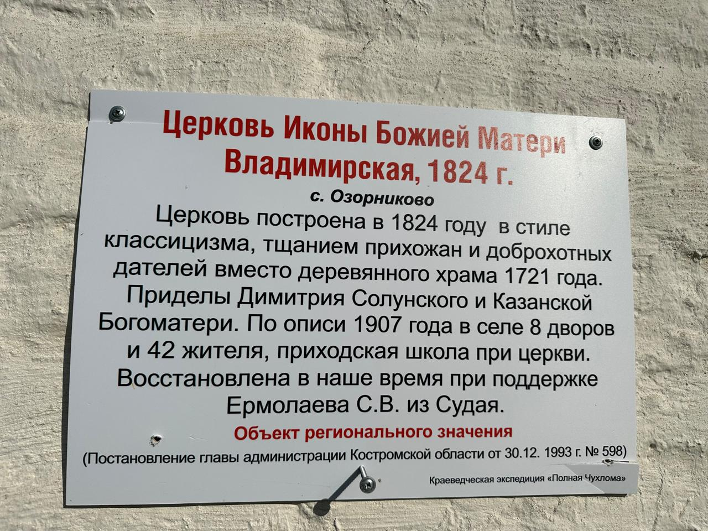

село Повалихино является исторически значимым поселением, где расположены прекрасные храмы, которые привлекают внимание туристов и верующих. Эти храмы являются важной частью культурного наследия региона.
 
